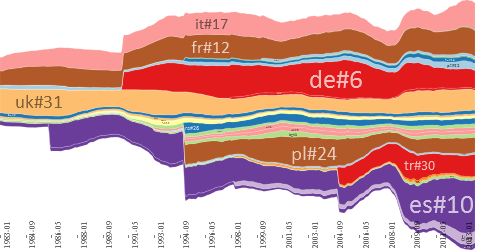

The following images were produced by the algorithms discussed in the submitted paper.
Clicking on a figure opens a high-resolution version in SVG format, which can be displayed in the web browser.
Passing with the pointer over a layer in a SVG figure reveals the layer label.
Since the SVG figures are large in data size, a compressed version of this website can be downloaded for navigating it locally.
| Ordering: TwoOpt. Baseline: 1-norm |
Ordering: TwoOpt. Baseline: 2-norm |
| Ordering: TwoOptR. Baseline: 1-norm |
Ordering: TwoOptR. Baseline: 2-norm |
| Ordering: BestFirst. Baseline: 1-norm |
Ordering: BestFirst. Baseline: 2-norm |
| Ordering: OnSet. Baseline: 1-norm |
Ordering: OnSet. Baseline: 2-norm |
| Ordering: D3. Baseline: 1-norm  |
Ordering: D3. Baseline: 2-norm |
| Ordering: Random. Baseline: 1-norm |
Ordering: Random. Baseline: 2-norm |